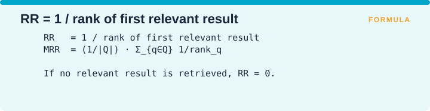
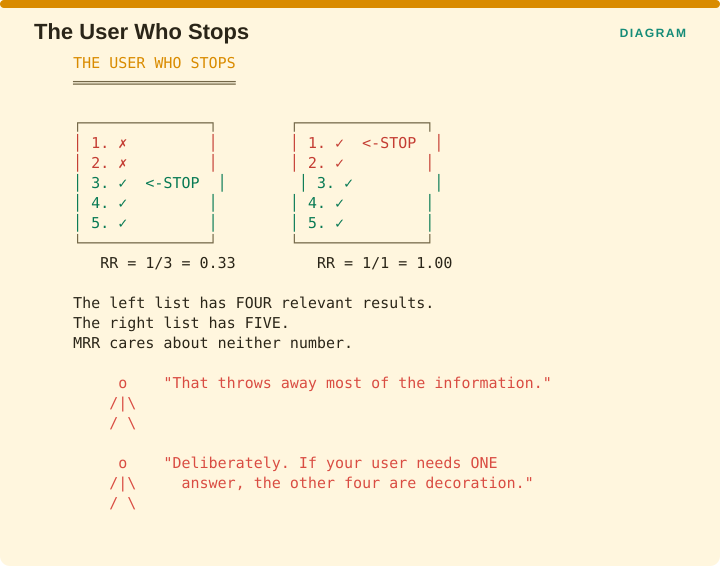
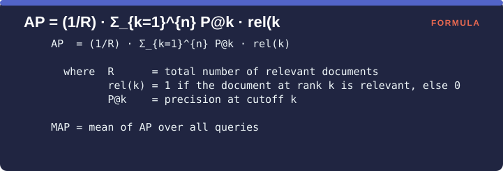
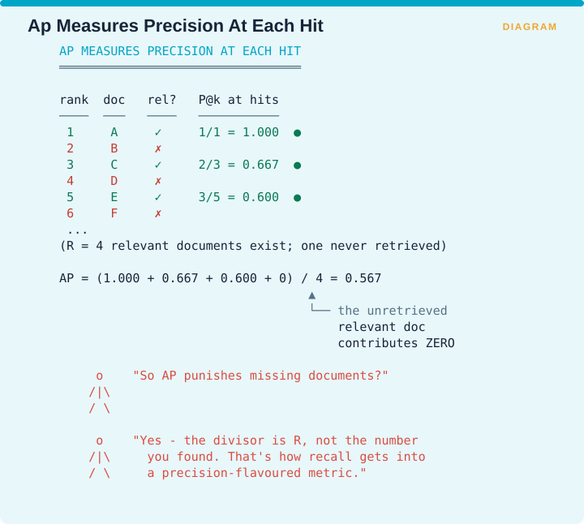
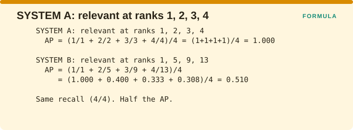
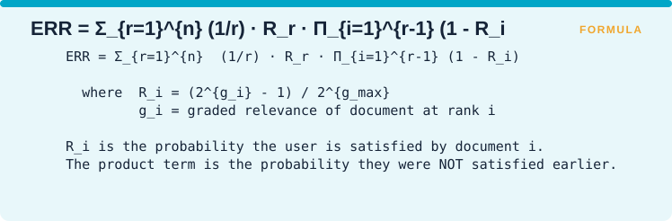
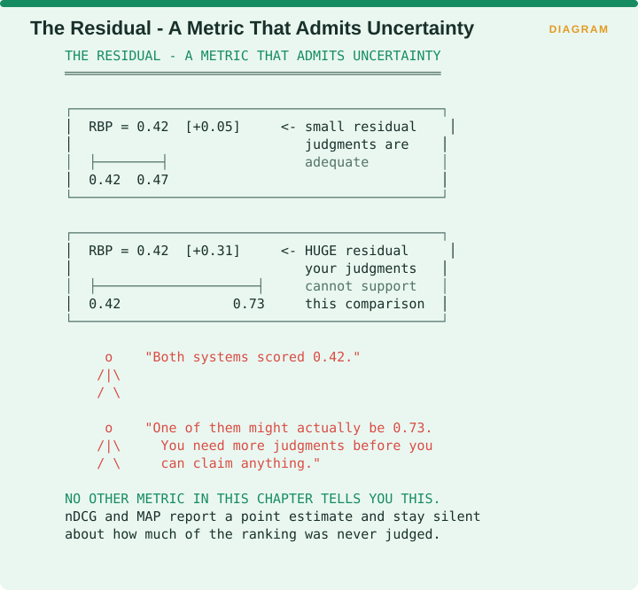
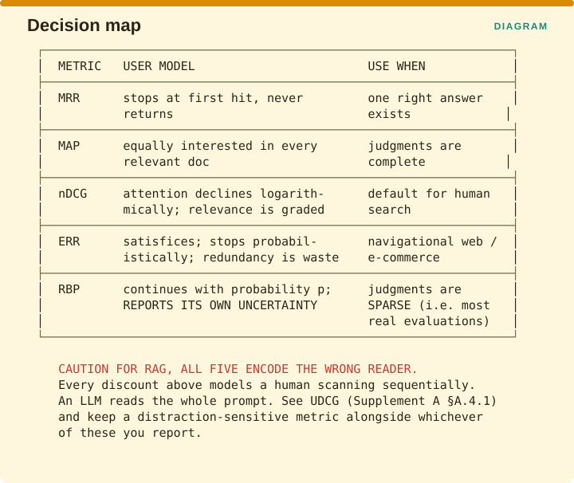

Measuring Retrieval › Chapter 5 - Rank-Based Metrics
Chapter 5 - Rank-Based Metrics
5.0 What Chapter 4 could not do
Every metric in Chapter 4 was rank-blind. P@10 gave the same score whether the relevant documents sat at positions 1, 2 and 3 or at positions 8, 9 and 10, and no user experiences those two result pages as equivalent.
Rank-based metrics fix this by applying a discount, which is a weight that gets smaller the further down the list a document sits, so a document near the top contributes more to the score than the same document lower down. Everything in this chapter is an answer to a single question: what shape should that discount have?

The figure plots five answers on the same axes. MRR counts only the first relevant result and gives everything after it a weight of zero. MAP averages the precision measured at each relevant position. nDCG uses 1/log2(i+1), which declines gently. ERR assumes the user stops once satisfied, so the weight depends on what came before. RBP uses p raised to the power (i-1), a geometric decline you control with a single number.
Asked which discount is correct, the honest answer is that none of them is. Each one encodes a different theory about how a person reads a result list, so the right question is which theory matches your users. Thinking of a metric as a user model rather than as a formula is the single most useful idea in classical evaluation, and it is what makes UDCG in Supplement A §A.4.1 comprehensible, since UDCG’s contribution is noticing that when the reader is a language model rather than a person, every discount in this chapter encodes the wrong theory.
5.1 MRR - Mean Reciprocal Rank
One-line: The reciprocal of the position of the first relevant result, averaged over queries.
Formula:

Facets: Correctness | query | ref | R | ESTABLISHED VERIFIED (standard; popularized via TREC QA tracks)
The problem it solves
Some questions have exactly one right answer. If somebody asks what year a treaty was signed, there is a single fact that settles it, and once they have found that fact they close the tab. For a question like that, precision and recall are answering something nobody cares about, because the number of other relevant documents is irrelevant to whether the person got what they came for. What matters is how far down the list they had to read before they found it.
The idea
Reciprocal rank is 1 divided by the position of the first relevant result, so a hit at position 1 scores 1.000, a hit at position 2 scores 0.500, a hit at position 3 scores 0.333, and a query where nothing relevant was retrieved at all scores 0. MRR is the mean of that value across all your queries.
This encodes the strictest user model in the chapter: the user reads until they find one good result, then stops and never comes back. Everything after the first relevant hit is invisible to the metric. That sounds crude, and for a large class of problems it is exactly right.

The figure compares two result lists. On the left, the first two results are irrelevant and positions 3, 4 and 5 are all relevant, giving a reciprocal rank of 1/3, which is 0.33. On the right, all five results are relevant, giving a reciprocal rank of 1/1, which is 1.00. The left list contains four relevant documents and the right contains five, and MRR pays attention to neither number. It throws away that information deliberately, on the grounds that if your user needs one answer, the other four documents are decoration.
Worked example
Five queries, recording only the position of the first relevant result in each.

The first query found a relevant result at rank 1, giving 1.000. The second found one at rank 3, giving 0.333. The third found one at rank 2, giving 0.500. The fourth found nothing at all, giving 0.000. The fifth found one at rank 1, giving 1.000. Adding those five values gives 2.833, and dividing by 5 gives MRR = 0.567.
Notice how sharply the value falls. Rank 1 is worth 1.00, rank 2 is worth 0.50, rank 3 is worth 0.33 and rank 10 is worth 0.10. Moving a result from position 2 up to position 1 gains you 0.50, and moving one from position 10 up to position 5 gains you exactly the same amount, which tells you how heavily this metric concentrates on the very top of the list.
Advantages
- Cheap labelling. You only have to identify the first relevant document, so an assessor can often stop judging a query as soon as they find one.
- Matches known-item and factoid search exactly. When there genuinely is one right answer, MRR is not an approximation of what you care about, it is the thing you care about.
- Highly interpretable. An MRR of 0.5 means that on average the first good result turns up around position 2, which is a sentence anyone can act on.
- Very sensitive at the top, which is where the screen space actually is.
Disadvantages
- Discards everything after the first hit. Recall is invisible, so a system that found one of twenty relevant documents ties a system that found all twenty.
- Unstable on individual queries. Reciprocal rank can only take the values 1, 1/2, 1/3, 1/4 and so on, so there is no possible score between 0.5 and 1.0. Small changes in rank produce large jumps, and an MRR computed over a handful of queries is noisy.
- Wrong model for exploratory or aggregative tasks. Somebody writing a literature review does not stop at the first paper, so the user model simply does not describe them.
- No partial credit for a near miss. A system that ranked the answer at position 101 scores the same zero as a system that never found it at all.
Domain examples
Question answering and factoid retrieval. This is MRR’s home. A question like “what year did X happen” has one answer, and the position of that answer is the entire story.
RAG chunk retrieval where one chunk suffices. If your questions can usually be answered from a single chunk, MRR measured on the gold chunk is an excellent and very cheap proxy. It pairs naturally with RAG-X’s Exclusive Hit Rate from Supplement B §D.4, which tells you whether the assumption of single-chunk sufficiency actually holds in your collection.
Legal or medical research. A poor fit as a primary metric, because these are recall-driven tasks where the researcher needs to assemble everything relevant. MRR will look excellent on a system that misses most of the material.
Recommendation
Use MRR when your task genuinely has one right answer, and say so explicitly whenever you report it. The most common misuse is reporting MRR on an aggregative task for the simple reason that it produces a flattering number.
Report the number of queries alongside the score, because the discreteness of reciprocal rank makes it noisy, and an MRR computed over thirty queries should not be compared to three decimal places against anything.
Failure mode

Two systems are compared. System A finds the gold chunk at rank 1 and misses the other six relevant chunks entirely. System B finds the gold chunk at rank 1 and also finds all six others inside the top ten. Both score an MRR of 1.00.
For a task with a single right answer that verdict is genuinely correct. For anything else, you have just declared a sixfold difference in recall invisible.
5.2 MAP - Mean Average Precision
One-line: For each query, average the precision measured at every position where a relevant document appears; then average over queries.
Formula:

Facets: Correctness | query | ref | R | ESTABLISHED VERIFIED (Manning Ch. 8)
The problem it solves
MRR looks only at the first hit and Chapter 4’s metrics ignore position altogether, so neither tells you whether a system that found four relevant documents put them near the top or scattered them down to rank 40. What you want is a single number that goes up when relevant documents move earlier and also goes down when relevant documents are missing entirely, without requiring you to pick an arbitrary cutoff.
The idea
The formula reads: AP equals 1/R multiplied by the sum, across every rank k, of P@k multiplied by rel(k). Taking those pieces one at a time, R is the total number of relevant documents that exist for this query, rel(k) is 1 if the document at rank k is relevant and 0 otherwise, and P@k is the precision measured over the top k results. Because rel(k) is zero everywhere except at relevant positions, the sum only picks up a value at the ranks where a relevant document actually appeared. MAP is then the mean of AP across all your queries.
Put in words, each relevant document is scored by how clean the list was up to the point where it appeared, and those scores are averaged.

The figure works a short ranking. Rank 1 is relevant, so precision there is 1/1 = 1.000. Rank 2 is not, and contributes nothing. Rank 3 is relevant, so precision there is 2/3 = 0.667. Rank 4 is not. Rank 5 is relevant, so precision there is 3/5 = 0.600. Four relevant documents exist in total and only three were retrieved, so the fourth contributes 0. Adding 1.000, 0.667, 0.600 and 0 gives 2.267, and dividing by R = 4 gives AP = 0.567.
That divisor is the crucial design decision. AP divides by the number of relevant documents that exist rather than by the number you managed to find, which means a relevant document you never retrieved drags the score down by contributing a zero to the average. That is how recall gets built into a metric that otherwise looks like a precision measure.
The user model underneath is that the user is spread evenly across all the relevant documents, equally likely to be looking for any one of them and stopping when they find the one they wanted. That reading is Robertson’s, and it is worth knowing because it is the assumption most often violated in practice.
Worked example
Two systems retrieve the same four relevant documents, placed differently.

System A puts them at ranks 1, 2, 3 and 4, so the precision at each hit is 1/1, 2/2, 3/3 and 4/4, which is 1.000 four times over. Averaging those and dividing by R = 4 gives AP = 1.000.
System B puts them at ranks 1, 5, 9 and 13, so the precision at each hit is 1/1 = 1.000, 2/5 = 0.400, 3/9 = 0.333 and 4/13 = 0.308. Those sum to 2.041, and dividing by 4 gives AP = 0.510.
Both systems have identical recall, since each found all four relevant documents. One scores twice what the other does, and the entire difference is position.
Advantages
- A single number reflecting both precision and recall across the whole ranking. This is why MAP dominated TREC-era evaluation for two decades.
- Stable and well-behaved. It distinguishes systems more reliably than MRR and is less noisy across a query set.
- Rewards early relevance without a hand-picked cutoff. There is no arbitrary K to defend.
- Deeply studied. Decades of literature exist on its statistical properties, so you know how it behaves.
Disadvantages
- Requires knowing R, the total relevant count. Zobel, Moffat and Park’s critique targets exactly this, since AP depends on the number of known relevant documents and so does nDCG, whose ideal ranking needs the same information. When judgments are incomplete, R is wrong and AP is biased. Chapter 6 is about nothing else.
- Binary relevance only. There is no way to express that one document was more relevant than another.
- The uniform-user assumption is usually false. Real users are rarely equally interested in every relevant document.
- Averaging across queries with very different R conflates easy and hard queries. A query with one relevant document and a query with two hundred contribute equally to the mean.
- Hard to explain to stakeholders. “The mean of the average of precisions measured at relevant positions” is not a sentence that survives a steering committee.
Domain examples
Academic benchmarking on curated collections. MAP’s natural home, because TREC-style collections have reasonably complete judgments, which makes R trustworthy.
Patent and legal search. MAP balances the two things these domains care about, so it is tempting, and it should be used carefully, because R is precisely the quantity you cannot know in a large collection. Consider bpref or infAP from Chapter 6 instead.
Production web or e-commerce search. Generally the wrong choice. R is unknowable, judgments are sparse, and users never see past rank 10, so use nDCG@k or RBP.
Recommendation
Use MAP when your judgments are reasonably complete, which in practice means on a curated evaluation collection. On sparse or pooled judgments, MAP’s reputation for stability is an illusion produced by a denominator you guessed at.
If you do report MAP, report the mean and the spread of R across your query set as well. A MAP computed over queries whose relevant sets range from 1 document to 200 is a weighted average whose weights nobody has looked at.
5.3 DCG and nDCG
One-line: Sum the graded relevance of each result, discounted logarithmically by position, then normalize by the best possible ordering.
Formula:

Facets: Correctness | query | ref | R | ESTABLISHED VERIFIED Source: Järvelin & Kekäläinen, Cumulated Gain-Based Evaluation of IR Techniques, ACM TOIS 20(4):422-446, 2002
The problem it solves
Every metric so far asks a yes or no question about each result, so a document is either relevant or it is not. Imagine asking a librarian to look through ten books your search returned and mark the useful ones. If the only thing they are allowed to write is yes or no, then a book that answers your question completely and a book that mentions your topic once both get the same yes, and you have thrown away most of what the librarian actually knew. DCG was designed to keep that information.
The idea
The first change is that each result gets a score instead of a label, usually a whole number from 0 to 3, where 3 means the result is exactly what the person wanted and 0 means it is useless. These scores come from a human rater and are called graded relevance judgments.
The second change is that a result near the top counts for more than the same result further down, because people read from the top and often stop partway. So each result’s score is divided by a number that grows as you move down the list. That number is log2(i+1), where i is the position, and you do not need to work the logarithm out yourself to use it.

What matters is the shape it produces, which the figure sets against MRR’s much harsher 1/i. At rank 1 both give 1.000. At rank 2, 1/i gives 0.500 while the log discount gives 0.631. At rank 3 they give 0.333 and 0.500. At rank 5, 0.200 and 0.387. At rank 10, 0.100 and 0.289. At rank 20, 0.050 and 0.228. The log discount declines gradually where 1/i falls off a cliff.
Asked why a logarithm specifically, the honest answer is that it is a modelling choice rather than something derived from data. Järvelin and Kekäläinen wanted a discount that penalized depth without making rank 10 worthless, and the logarithm does that. Other shapes would too, and RBP in §5.5 picks a different one.
The formula panel also names two variations you need to know about. The gain function shown above is linear, using rel_i directly, and a common alternative called exponential gain uses (2^rel_i - 1) instead, which treats a grade of 3 as seven times a grade of 1 rather than three times. IDCG@k means the DCG of the ideal ranking, and nDCG@k is DCG@k divided by IDCG@k, which lands between 0 and 1.
Worked example
Suppose five results come back and a rater scores them, in order, 3, 0, 2, 1 and 3.

The first result sits at position 1 with a multiplier of 1.000, so it contributes 3 × 1.000 = 3.000. The second was judged useless, so it contributes nothing no matter where it sits. The third contributes 2 × 0.500 = 1.000. The fourth contributes 1 × 0.431 = 0.431. The fifth contributes 3 × 0.387 = 1.161. Adding those gives DCG@5 = 5.592.
That number is hard to interpret on its own, because a query that happens to have several highly relevant documents can reach a larger total than a query that has only one, without the system having done any better on it. So you compare the result against the best score those same five judgments could possibly have produced, which means putting them in their ideal order of 3, 3, 2, 1, 0 and running the same calculation. That gives 3.000, then 3 × 0.631 = 1.893, then 1.000, then 0.431, then 0 for the final zero-graded document, which sums to IDCG@5 = 6.324.
Dividing one by the other gives nDCG@5 = 5.592 / 6.324 = 0.884. Because every query is now scored against its own ceiling, the results can be averaged across a whole set of queries.
Advantages
- Handles graded relevance, and it is the only metric so far that does, which matters because real relevance is not a binary property.
- Bounded between 0 and 1 and comparable across queries, thanks to the normalization step.
- Tunable through the gain function. Linear gain treats a grade of 3 as three times a grade of 1 while exponential gain treats it as seven times, and that is a genuine modelling lever rather than a cosmetic choice.
- The industry default, so your numbers can be compared against published ones.
- Works at any cutoff.
Disadvantages
- IDCG requires knowing all the relevant documents. The same critique Zobel, Moffat and Park aim at AP applies here, since building the ideal ranking requires the complete relevant set. With incomplete judgments your denominator is wrong.
- Two gain functions are in circulation and papers often do not say which they used. nDCG numbers frequently cannot be compared across papers for this reason alone.
- The log discount is an assumption rather than a finding. It is a reasonable model of a human scanning a page and a poor model of a language model consuming a prompt, which is the point UDCG makes directly.
- Insensitive to the tail. nDCG@10 says nothing whatsoever about rank 11 and beyond.
- Normalization can mask absolute quality. A query where the best possible result is mediocre still reads 0.9 if you returned that mediocre result first.
Domain examples
Web and e-commerce search. The default here for good reasons, since graded relevance matches what assessors actually perceive, meaning a perfect match, a decent match and a related item, and the log discount roughly matches how people scan a page.
Enterprise search with expert users. Works well, and deeper cutoffs such as nDCG@20 are legitimate because these users really do read that far.
RAG chunk ranking. CAUTION This is where nDCG quietly stops working. The log discount models sequential human attention, and a language model processes the whole prompt at once, so the positional theory underneath the metric does not describe the reader. Worse, as The Power of Noise and GainRAG both show, a chunk that is only tangentially relevant can actively damage the answer, and nDCG scores such a chunk as a harmless zero rather than as a negative. If you report nDCG on RAG retrieval, put a distraction-sensitive metric next to it, which Supplement A §A.4 covers.
Recommendation
Use nDCG@k as your primary classical ranking metric, with k matched to your interface, and always state your gain function and your k when you report it. A bare claim of “nDCG = 0.71” without those two facts is not reproducible, because the reader cannot tell which of at least four different calculations you performed.
For RAG, keep nDCG for continuity and for comparison against published work, and make the actual decision on a machine-utility measure instead.
5.4 ERR - Expected Reciprocal Rank
One-line: MRR generalized to graded relevance, with the user stopping probabilistically once satisfied.
Formula:

Facets: Correctness | query | ref | R | ESTABLISHED VERIFIED Source: Chapelle, Metzler, Zhang & Grinspan, CIKM 2009, pp. 621-630, doi 10.1145/1645953.1646033
The problem it solves
nDCG applies the same positional discount to rank 5 whether or not anything relevant appeared above it, which means it credits a relevant document at rank 5 identically in two situations that are not alike at all. If ranks 1 through 4 were useless, the reader almost certainly got as far as rank 5. If rank 1 already answered the question, the reader almost certainly never saw rank 5. A metric that cannot tell those apart is crediting documents nobody read.
The idea
ERR is a cascade model, which means it imagines the user moving down the list one position at a time, and at each document there is some probability they are satisfied and stop. The score is the expected reciprocal rank of wherever they stop.
Reading the formula, R_i is the probability that document i satisfies the user, computed from its grade as (2^g_i - 1) divided by 2^g_max, so a higher grade means a higher chance of stopping. The product term multiplies together (1 - R_i) for every document above position r, which is the probability the user was not already satisfied earlier and therefore actually reached position r. Multiply that by 1/r and sum over all positions.

The figure sets the two cases side by side. In the first, a relevant document sits at rank 5 with nothing relevant above it, so the user very likely keeps scanning and reaches it, and rank 5 earns substantial credit. In the second, the same relevant document sits at rank 5 but rank 1 is also relevant, so the user probably stopped there and never reached position 5, which earns almost no credit at all.
nDCG gives rank 5 the same discount in both cases. ERR does not, and that is its entire contribution.
Advantages
- The most realistic user model in this chapter for navigational and informational web search. Sakai, reviewing the field, singles out ERR as particularly useful for this reason.
- Handles graded relevance.
- Correctly discounts redundancy. If the same answer appears three times, ERR credits roughly one of them, which is a genuine and rare property among these metrics.
- Bounded and comparable.
Disadvantages
- The satisfaction model is parametric and fixed. Defining R_i as (2^g - 1)/2^g_max is a modelling choice, and it was not derived from your users’ behaviour.
- Assumes the user stops when satisfied, which is wrong for aggregative tasks, and this is the same failure MRR has, inherited wholesale.
- Less widely reported than nDCG, which makes external comparison harder.
- Harder to explain, because the product term does not have an intuitive reading.
Domain examples
Web search with navigational intent. ERR’s design target and its best fit.
E-commerce. A strong fit, because a shopper who finds a suitable product really does stop.
RAG chunk retrieval. CAUTION Structurally wrong here, and wrong in an interesting way. ERR assumes the reader stops early, and a language model reads every chunk in the prompt. The core innovation of ERR, which is discounting deep positions because they were probably never seen, is precisely backwards for a consumer that sees everything. Its redundancy discount remains useful for RAG, which is why RAG-X’s Pairwise Redundancy exists as a separate measure.
Recommendation
Use ERR for human-facing search where users satisfice, meaning they stop as soon as they have something good enough. Do not use it for RAG retrieval, because its positional assumption is inverted for a language model consumer.
If you want ERR’s redundancy property in a RAG setting, take Pairwise Redundancy and Exclusive Hit Rate from Supplement B §D.4 instead.
5.5 RBP - Rank-Biased Precision
One-line: A geometric-discount precision measure with an explicit residual quantifying how much the score could change if unjudged documents were judged.
Formula:

Facets: Correctness | query | ref | R | ESTABLISHED VERIFIED Source: Moffat & Zobel, Rank-Biased Precision for Measurement of Retrieval Effectiveness, ACM TOIS 27(1), Article 2, 2008 (27 pages), doi 10.1145/1416950.1416952
The problem it solves
Every metric so far reports a single number and says nothing about how much of the ranking nobody ever looked at. In a real evaluation you have judged perhaps the top ten documents of a list of a thousand, so most of what your system returned has no label at all, and your metric silently treats all of it as irrelevant. That is a guess, and the metric does not tell you how much the answer depends on it.
The idea
Two things make RBP distinctive, and the second is what earns it a place in this book.
First, persistence is an explicit parameter. In the formula, p is the probability that the user continues from one rank to the next, r_d is 1 if the document at rank d is relevant and 0 otherwise, and the discount at depth d is p raised to the power (d-1). Setting p to 0.5 models an impatient user and makes the metric very top-heavy, p of 0.8 models a moderate one, and p of 0.95 models someone very persistent whose attention is nearly uniform with depth. Your assumption about the user is written down as a number somebody can argue with.
Second, and more importantly, RBP produces a range rather than a point. The sum in the formula runs to infinity while your judgments stop after a few dozen documents, so RBP naturally gives a lower bound, obtained by assuming every unjudged document is irrelevant, and an upper bound, obtained by assuming every one of them is relevant. The gap between those two is called the residual, and it measures how much of your evaluation is being driven by ignorance.

The figure contrasts two reports that look identical at first glance. One reads RBP = 0.42 with a residual of +0.05, so the true value lies somewhere between 0.42 and 0.47 and your judgments are adequate to support a comparison. The other reads RBP = 0.42 with a residual of +0.31, so the true value lies anywhere between 0.42 and 0.73, and the system you just declared worse might in fact be better. Both systems scored 0.42, and only one of those measurements means anything.
No other metric in this chapter tells you this. nDCG and MAP report a point estimate and stay silent about how much of the ranking was never judged.
Worked example
Take p = 0.8, so (1 - p) = 0.2.

Rank 1 is relevant with a discount of p^0 = 1.000, contributing 0.2 × 1 × 1.000 = 0.2000. Rank 2 is not relevant, contributing 0. Rank 3 is relevant with a discount of p^2 = 0.640, contributing 0.2 × 0.640 = 0.1280. Rank 4 was never judged, so it contributes nothing to the lower bound. Rank 5 is relevant with a discount of p^4 = 0.410, contributing 0.0819. Those sum to a lower bound of 0.4099.
Now the residual. If rank 4 turned out to be relevant it would add 0.2 × 0.512 = 0.1024, and every unjudged rank past 5 would add more on top of that. Reporting the pair together gives RBP = 0.41 [+0.10], which says the score is 0.41 and could be as high as about 0.51 once the unjudged documents are accounted for.
Advantages
- The residual is a genuine methodological advance. It converts “our judgments are incomplete” from an unstated caveat in the methods section into a number on the dashboard.
- No need to know R. RBP requires no count of total relevant documents, which is exactly the property Zobel, Moffat and Park argue for when they reject AP and nDCG in favour of it.
- Persistence is explicit and auditable, since you state your user model as a parameter.
- Well-behaved under pooling, having been designed for incomplete judgments from the start.
- Bridges directly into Chapter 6, as the rank metric that takes incompleteness seriously.
Disadvantages
- p must be chosen and the results move with it. RBP at p = 0.5 and RBP at p = 0.95 are different metrics, so an unreported p makes the number meaningless.
- Binary relevance in its base form, although graded extensions do exist.
- Less familiar than nDCG, so you will spend meeting time explaining it.
- The residual can be uncomfortably large, which is a feature that reads as a bug to anyone who wanted a single confident number.
Domain examples
Any evaluation with pooled or sparse judgments. This is RBP’s reason for existing, and it covers most real production evaluation.
Legal and patent search. Judgments are always incomplete at this scale, and the residual tells you whether your comparison is supportable, which is a defensible position to hold in a discovery dispute.
RAG retrieval evaluation. Underused and very well suited, because RAG judgments are almost always sparse, meaning you labelled the gold chunk and nothing else. A point-estimate nDCG in that setting is overconfident, and RBP’s residual is arguably the most honest classical metric available for RAG retrieval.
Recommendation
Adopt RBP alongside nDCG, specifically for the residual, and report
it in the paired form RBP@p=0.8 = 0.41 [+0.10]. That
bracketed number will do more to improve your evaluation hygiene than
any other single change in this chapter, because it makes the cost of
sparse judgments visible to everyone looking at the dashboard.
Set p from observed user behaviour if you have it, where mean scroll depth is a reasonable proxy, and then hold it fixed.
Failure mode

Paper A reports RBP = 0.62 without stating that it used p = 0.95. Paper B reports RBP = 0.41 without stating that it used p = 0.50. A reader concludes that system A is much better.
System A was measured against a user who reads twenty results and system B against a user who reads two, so the two numbers are answers to different questions and comparing them means nothing.
5.6 Chapter 5 summary - which discount, and when

The five metrics, each with the user model it assumes and the condition under which you should reach for it. MRR assumes a user who stops at the first hit and never returns, and you use it when one right answer exists. MAP assumes a user equally interested in every relevant document, and you use it when your judgments are complete. nDCG assumes attention declining logarithmically over graded relevance, and it is the default for human-facing search. ERR assumes a user who satisfices and stops probabilistically, treating redundancy as waste, and it suits navigational web search and e-commerce. RBP assumes a user who continues with probability p, and it reports its own uncertainty, which makes it the right choice when judgments are sparse, meaning most real evaluations.
There is a caution that applies to all five at once. Every discount above models a human scanning a list from top to bottom, and a language model reads the whole prompt at the same time, so for RAG all five encode the wrong reader. Keep whichever of these you report for comparability, and put a distraction-sensitive metric alongside it. UDCG in Supplement A §A.4.1 is the direct treatment of this problem.
Measuring Retrieval · Madhava Gaikwad · First edition, September 2026